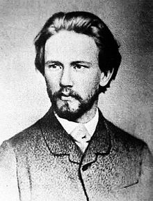

Piotr Ilici Ceaikovski
Piotr Ilici Ceaikovski, în limba rusă Пётр Ильи́ч Чайко́вский, (n. 25 aprilie, pe stil nou 7 mai 1840, Kamsko-Wotkinski Sawod, azi orașul Ceaikovski - d. 25 octombrie, pe stil nou 6 noiembrie 1893, Sankt Petersburg) a fost un compozitor rus. A alcătuit simfonii, concerte, opere, balete și muzică de cameră. Unele dintre acestea fac parte din repertoriul clasic al multor concerte populare și teatre muzicale.
A urmat colegiul de jurisprudență, a luat diploma în drept și s-a angajat ca secretar la Ministerul Justiției. În același timp, se ocupa de muzică, în calitate de amator. Munca sa la minister nu-i stârnea nici un interes, motiv pentru care i-a scris surorii sale „au făcut din mine un funcționar, și încă unul prost“. În fine, în 1863, împotriva hotărârii familiei, părăsește slujba de la minister și începe să studieze muzica cu Anton Rubinstein.
În 1866, după ce a terminat studiile de muzică, Nikolai Rubinstein, fratele lui Anton, i-a oferit postul de profesor de teorie muzicală la proaspăt înființatul Conservator din Moscova, post pe care l-a ocupat până în 1878. În această periodă a compus Simfonia nr.1 în sol minor, op. 13 („Vise de iarnă”). S-a împrietenit cu mai mulți membri din grupul celor cinci compozitori ruși, astfel că-i dedică uvertura fanteziei "Romeo și Julieta" fondatorului grupului, Mili Balakirev.
În luna iulie a anului 1877, Ceaikovski va trăi unul din episoadele cele mai nefericite ale vieții sale. Pentru a pune capăt speculațiilor privind homosexualitatea sa, se căsătorește cu Antonia Milioukova, o fostă elevă a sa, care nutrea o reală pasiune pentru el. Căsătoria a fost un eșec deplin. Nemaiputând să suporte prezența soției sale, Ceaikovski încearcă să se sinucidă, prin încercarea de a se îmbolnăvi de pneumonie. La scurt timp după aceea, se desparte de Antonia.
Compune primul său balet, în 4 acte, Lacul lebedelor (libretul de V. Beghicev și V. Geltzer). Premiera a avut loc la Sankt Petersburg, la „Teatrul Mariinski”, pe 15 ianuarie 1895, dar a fost un eșec, din cauza unei nepotrivite puneri în scenă. Abia peste 30 de ani a fost definitivată trama baletului. Compune și o operă, Evgheni Oneghin, libretul fiind extras dintr-un roman de Alexandr Pușkin.
Pe data de 6 noiembrie 1893, la nouă zile după ce a terminat Simfonia a 6-a în Si minor Patetica op.74, Ceaikovski moare de holeră pentru că a băut apă nesterilizată din râul Neva. Acesta este motivul oficial. Unii cred că actul a fost deliberat, deci o sinucidere, după ce a fost descoperită relația homosexuală pe care o avea cu nepotul unui nobil rus. Indiferent de motivul real, a beneficiat de funeralii naționale, la care au luat parte aproape 8.000 de persoane, fiind înmormântat la mănăstirea Alexandr Nevski din Sankt Petersburg.
